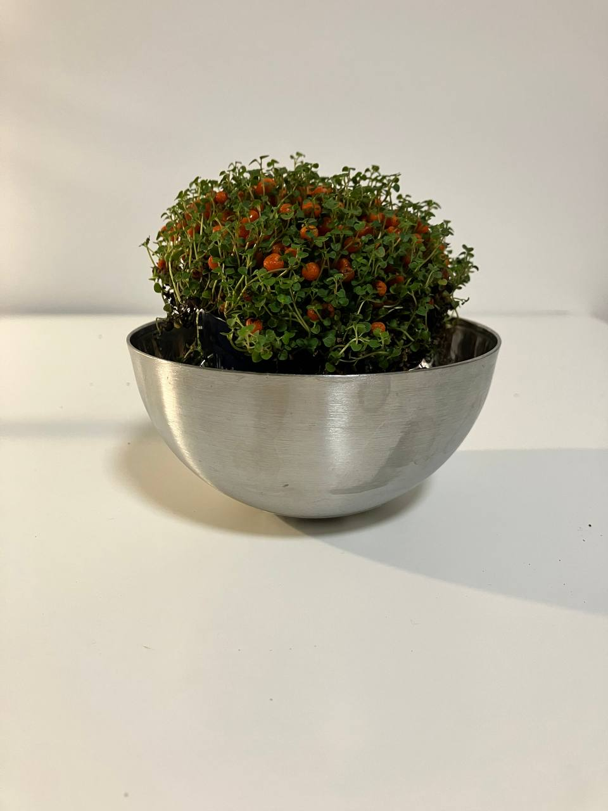

Activity
- Scheduled
- Feed 03-09-2024
- Repot 03-08-2025
Nertera Granadensis Plant Care Guide
Environment
Light
- Bright, Indirect Light: Nertera Granadensis thrives in bright, indirect light. Avoid direct sunlight, which can scorch the leaves and berries.
Soil
- Well-Draining Soil: Use a potting mix that drains well, such as a mix designed for cacti or succulents. Adding sand or perlite can improve drainage.
Temperature
- Cool to Moderate Temperatures: Nertera Granadensis prefers temperatures between 50-75°F (10-24°C). It does not tolerate frost, so keep it away from cold drafts.
Routine jobs
Watering
- Consistent Moisture: Keep the soil consistently moist, but not waterlogged. Water when the top inch of soil feels dry to the touch.
- Humidity: This plant prefers higher humidity levels. Mist the plant regularly or place it on a humidity tray to maintain moisture around the plant.
Feeding
- Fertilization: Feed the plant with a balanced liquid fertilizer diluted to half strength every month during the growing season (spring and summer).
Potting
- Container Choice: Choose a pot with drainage holes to prevent waterlogging. Shallow pots work well for this plant due to its shallow root system.
- Repotting: Repot as needed, typically every 1-2 years, or when the plant outgrows its container.
Troubleshoot
- Common Pests: Watch for common pests such as aphids, mealybugs, and spider mites. Treat infestations promptly with insecticidal soap or neem oil.
- Leaf and Berry Care: Remove any dead or damaged leaves and berries to keep the plant healthy and prevent disease.
Special Notes
- Berries: The bright orange berries are a distinctive feature of Nertera Granadensis. They appear after flowering and can last for several months. Ensure the plant gets enough light and water to support berry production.